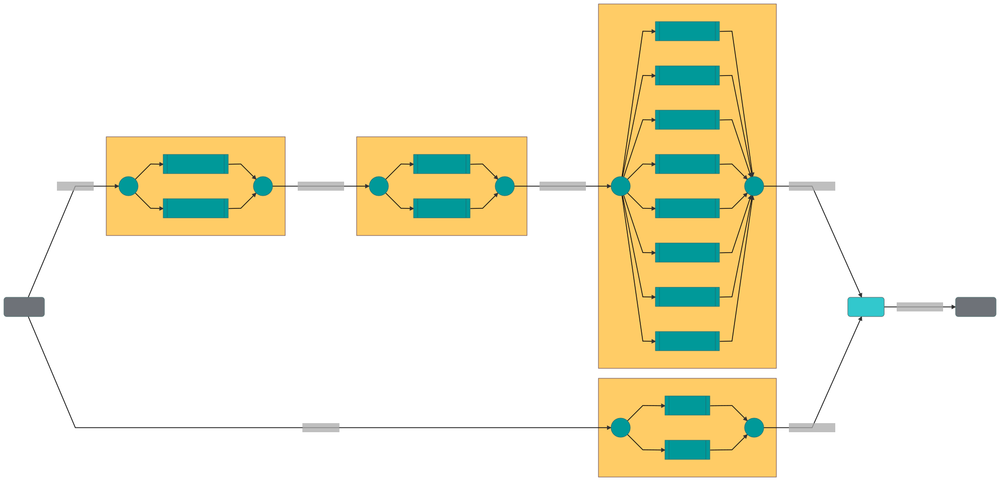

Jina Cloud Benchmark & Deployment¶
Purpose: Showcase how to scale Jina and how to deploy to AWS¶
Table of contents¶
Infrastructure¶
This example benchmark prioritizes a real-world scenario, where a user hosts Jina on the cloud. We use six machines in AWS, of instance size c5.2xlarge (8 vCPUs, 16 GB RAM). We also add a 100 GB ssd. For the vector indexer machine we increased RAM to 32 GB.
The instances are split as follows:
Client: from this machine we create the Flows and issue the client requests (indexing and querying)
Flow: this machine hosts the
Gatewayto theFlowEncoder: this machine processes the raw data (text or image) with the respective encoders
Indexer: this machine hosts the indexers
Ranker: this machine hosts the
Redisservers and the rankers
Datasets¶
To run these tests, we prepared two scenarios: text and image search. These are the most common use cases for neural search.
Note that in these tests, the quality of the results is not assessed, and therefore only the amount of returned matches is validated.
Image search¶
The first scenario simulates an image search application. Images are randomly generated and indexed using a Flow with this topology:

We use the mobilenet_v2 encoder with the ImageTorchEncoder.
At query time, the Flow looks like this:

In the image search scenario there is no segmentation and ranking. The results are returned according to the distance in embedding space returned by the VectorIndexers.
Text search¶
The text search topology is similar to the one above, but with a segmenter (Sentencizer) and a ranker (SimpleAggregateRanker). This means we are indexing on the chunk level of a Document.
The full indexing Flow can be seen below:

The full search Flow can be seen below:

Configuration¶
The configuration parameters of this experiment can be found in the .env file. These values are set as environment variables and replaced in the YAML files, configuring the flow and the pods.
The parameters are organized in 4 groups:
Infrastructure parameters: Configure what the different machines are.
Sharding parameters: Configure the parallelization and sharding of different components
Functional/indexers parameters: Configure the functional parameters that can affect the performance of the search
Client parameters: Configure how the client connects to the Flow
Sharding and scheduling parameters¶
Jina allows for parallelization of data processing. You can read an overview of these options here. We use these to parallelize the various Pods. On the same topic, we also configure the scheduling strategy.
Functional/indexers parameters¶
As part of the benchmark, we also compare the performance of the NumpyIndexer with the advanced indexers, based on Annoy and Faiss. We also provide specific arguments to these: num_tress for Annoy; index_key for Faiss.
Client¶
In order to simulate a real-world scenarios, we also test using multiple concurrent clients. This is achieved using the Python multiprocessing library.
In order to stress-test the system, we also issue index and query requests for several hours in a row. Each request contains a specific number of Documents, split across requests of the same request_size.
The client also sets the TOP_K parameter. This limits the number of matches returned by the Flow. This also affects performance.
Experiments¶
NOTE For now we only provide results for the image dataset. The text dataset will work too, if you want to test that.
For computing an estimated throughput we used the following configuration:
Encoder:
parallel: 2Vector Indexer:
shards: 8key-value Indexer:
parallel: 2scheduling:
load_balance
See full environment configuration (the .env file):
Click to expand
##Infrastructure parameters
JINA_ENCODER_HOST=encoder
JINA_RANKER_HOST=ranker
JINA_REDIS_INDEXER_HOST=ranker
JINA_VEC_INDEXER_HOST=vector
##Flow parameters
FLOW_HOST=flow_host
FLOW_PORT=8000
##Sharding/Performance parameters
JINA_SHARDS_ENCODER=2
JINA_SHARDS_INDEXERS=8
JINA_SHARDS_REDIS=2
OMP_NUM_THREADS=1
SCHEDULING=load_balance
##Functional/Indexers parameters
JINA_ENCODER_DRIVER_BATCHING=16
JINA_DISTANCE_REVERSE=False
JINA_FAISS_IMAGE=docker://jinahub/pod.indexer.faissindexer:0.0.15-0.9.33
JINA_ANNOY_IMAGE=docker://jinahub/pod.indexer.annoyindexer:0.0.16-0.9.33
JINA_FAISS_INDEX_KEY='IVF50,Flat'
JINA_ANNOY_NUM_TREES=100
JINA_ANNOY_SEARCH_K=-1
##Client/run parameters
TOP_K=50
#Number of documents a client will try to index at every connection
DOCS_INDEX=1000
#Number of documents a client will try to query at every connection
DOCS_QUERY=1000
PYTHON_EXEC=python3
DATASET=image
#Number of seconds for which clients will try to index documents. (The time is checked after each cycle of indexing `DOCS_INDEX`)
TIME_LOAD_INDEX=18000
#Number of seconds for which clients will try to query documents. (The time is checked after each cycle of indexing `DOCS_QUERY`)
TIME_LOAD_QUERY=3600
#Number of documents every request will contain
REQ_SIZE=50
#Number of concurrent clients indexing
CONCURRENCY_INDEX=5
#Number of concurrent clients querying
CONCURRENCY_QUERY=1
SLEEP_TIME=10
We provide two experiments, depending on the key-value store we employ.
Experiment 1 - Redis¶
In this example we use redis as a key-value store.
Results¶
| Operation | Vector Indexer | KV Indexer | Time (h) | Documents | QPS |
|---|---|---|---|---|---|
| Index | NumpyIndexer | Redis | 5 | 1448000 | 80.22 |
| Query | Faiss (index_key='IVF50,Flat') | Redis | 1 | 22000 | 5.89 |
| Query | Annoy (trees=100, k=-1) | Redis | 1 | 23000 | 6.14 |
| Query | NumpyIndexer | Redis | 1 | 8000 | 2.07 |
Experiment 2 - BinaryPbIndexer¶
In this example we use the BinaryPbIndexer as a key-value store, instead of redis.
Results¶
| Operation | Vector Indexer | KV Indexer | Time (h) | Documents | QPS |
|---|---|---|---|---|---|
| Index | NumpyIndexer | BinaryPb | 5 | 1283000 | 71.05 |
| Query | Faiss (index_key='IVF50,Flat') | BinaryPb | 1 | 108000 | 29.77 |
| Query | Annoy (trees=100, k=-1) | BinaryPb | 1 | 113000 | 31.12 |
| Query | NumpyIndexer | BinaryPb | 1 | 9000 | 2.36 |